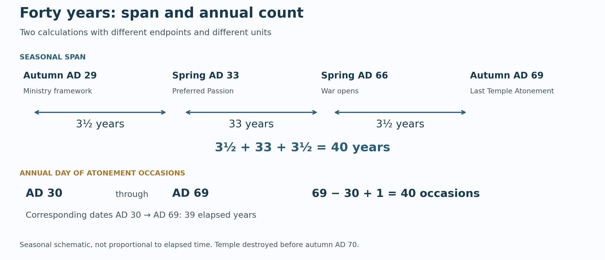
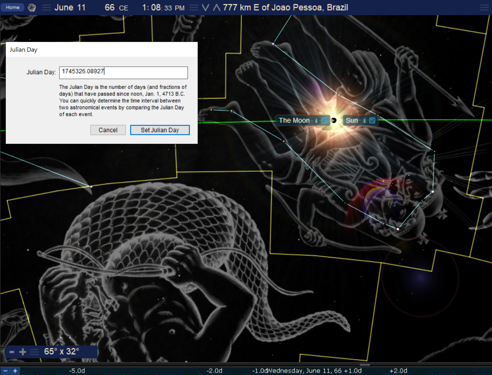
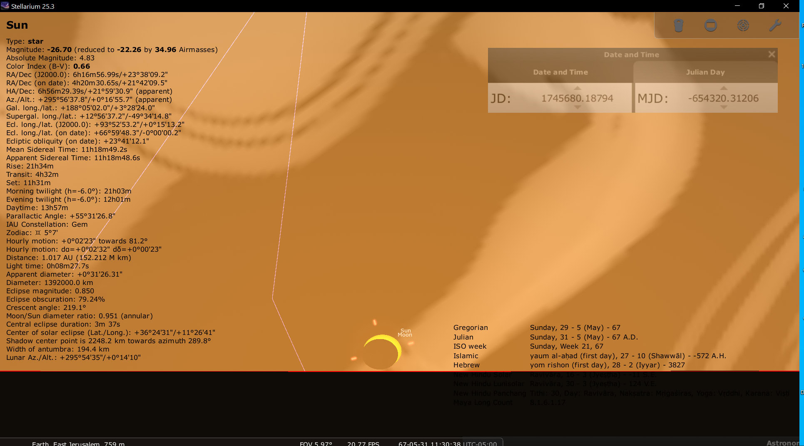

Jerusalem and the Sword in the Sky
Book 2 · Celestial Signs of the First Advent · Chapter 13
The warning over Jerusalem and the witness beyond its walls
Jesus wept over Jerusalem. That matters when we approach its destruction. The city in this chapter contained people He loved, a sanctuary in which He taught, and children who would suffer in the war. From the heavenly perspective, judgment is real. So is the grief.
But when you see Jerusalem surrounded by armies, you will know that her desolation is near.
Luke 21:20 · BSB[1]
The events now before us belong to the war that began in AD 66 and brought Jerusalem and its Temple to destruction in AD 70. The Gospel had already gone out from the city. Its witnesses were carrying the name of Jesus into the empire that would burn the sanctuary.
Earlier chapters followed the Woman, the Child, the Lamb, and the Lion. Here the sword comes into view. Josephus reports a sword-shaped star over Jerusalem, while John sees a sword proceeding from the mouth of the risen Christ. I read the earthly crisis beneath that greater authority. The connection I see is judgment under the word of the King.[2]
What Josephus reports
Near the end of his account of the Temple’s destruction, Josephus looks back at warnings that preceded it. He mentions “a star resembling a sword” standing over the city and “a comet, that continued a whole year.” He then recounts a light around the altar and sanctuary, an extraordinary birth from a sacrificial animal, a heavy gate opening, armed formations in the clouds, and a voice heard at Pentecost.[3]
These reports belong to Josephus’s explanation of the catastrophe. He presents the signs as divine warnings that people failed to understand. That is already an interpretation within the ancient account. He also distinguishes different responses: some people welcomed what others understood as a warning.
We should hear what he actually says before deciding what object he saw. His wording leaves open whether the sword-shaped star and the comet describe one phenomenon or two. He gives no orbital measurements and no beginning and ending dates for the comet’s year. Its appearance above Jerusalem does not mean that a celestial body remained fixed over that one geographical point.
Yet the sword is a forceful image. The city would experience the weapon on earth after the warning appeared in heaven. My reading takes that correspondence seriously. Its meaning comes into focus through Christ’s warning and John’s testimony, rather than through the ancient habit of assigning every comet the same message.
Halley’s return and the year-long report
There was a well-established cometary return in AD 66. JPL’s historical catalogue identifies Halley’s Comet, gives its perihelion as January 26, and lists a first report around January 30 with an approximate naked-eye observing interval of 71 days. These are Julian dates.[4]
Halley therefore belongs in the discussion. Its return puts a real, identifiable comet in the sky at the beginning of the war year. The catalogue’s roughly 71-day observing interval, however, does not establish continuous visibility for a whole year. Nor does Josephus supply the information needed to identify a second comet that would complete such a span.
The astronomical identification remains more limited than the ancient report. Halley is a plausible contributor to the remembered warning. The identity of Josephus’s sword-star, the number of objects intended, and the exact meaning of his year-long description remain open.
That leaves the central question intact. What does a warning over Jerusalem mean when read from the throne of the Messiah who had already spoken about the city’s desolation? A local observer might recognize only an alarming light. The heavenly audience could understand the event within a history that the observer could not yet see.
The sanctuary’s warnings
Josephus places several signs within the festival season before the revolt. His month names can be followed in the Jewish feast setting, without pretending that he has supplied a modern civil date for every event.[5]
| Report | Time given in Josephus |
|---|---|
| Light around the altar and sanctuary | Xanthicus 8, conventionally Nisan 8; about the ninth hour of the night; lasting about half an hour |
| A heifer giving birth to a lamb | During the festival, while being led for sacrifice |
| The eastern gate opening | About the sixth hour of the night; no separate numbered date is supplied |
| Chariots and armed troops in the clouds | Artemisius 21, conventionally Iyyar 21; before sunset |
| Shaking, noise, and a collective voice announcing departure | Pentecost; during the priests’ night service |
The light is striking because it surrounds the place of sacrifice. Josephus says that those without understanding took it as a good sign, while the learned understood it as a warning. Light, by itself, had not told everyone the same thing. The meaning had to be discerned.
The gate presents the same division. It was the heavy bronze eastern gate of the inner Temple court. Josephus describes the difficulty of closing it, the guards’ alarm, and the effort required to secure it again. Some took its opening as the entrance to blessing. Others understood the sanctuary’s protection to be giving way.
The eighth-day setting also catches my attention. Leviticus 9 opens with the priestly service on the eighth day; Leviticus 10 immediately follows with judgment on Nadab and Abihu’s unauthorized fire. I see a correspondence between the inauguration of priestly service and a warning around the altar as its final years begin. Leviticus itself does not identify that eighth day as Nisan 8. The connection is an eighth-day reading, not a claim that the Torah supplies Josephus’s calendar date.[6]
Josephus’s account includes a human warning as well. Jesus son of Ananus, a man distinct from Jesus Christ, began crying out against Jerusalem and the sanctuary at Tabernacles several years before the war. He continued despite beatings and was eventually killed during the siege. Whatever judgment a reader makes about each extraordinary report, the narrative keeps returning to the same issue: a city approaching disaster while warnings are dismissed.
Departure and Pentecost
The Pentecost report brings the matter to its sharpest point. The priests hear a collective voice announcing departure. Josephus gives this as a report from those performing their service, rather than as a celestial position that we can recalculate.[5]
Ezekiel had already shown the glory leaving the Temple and moving eastward. A sanctuary could retain its walls and ceremonies while its security before God was gone. The building’s continued existence was no guarantee that the people had understood their condition.
Pentecost also carries another memory for the reader of Acts. The Spirit came upon Christ’s witnesses at Pentecost, and the testimony began moving outward from Jerusalem. Read beside that account, Josephus’s later Pentecost warning has a severe force: the heavenly purpose was advancing while the sanctuary approached destruction. I see the two events within one history of God’s presence and judgment.[7]
The Temple’s loss was devastating. The authority of the risen Christ, and the life He had given His people, reached beyond the building that Rome would destroy.
Forty years, counted carefully
A later Jewish tradition in Yoma 39b remembers adverse signs during the forty years before the Temple’s destruction: the lot for the LORD failing to appear in the high priest’s right hand, the crimson strip failing to turn white, the western lamp failing to remain alight, and the sanctuary doors opening. The tradition connects the doors with Zechariah’s warning:[8]
Open your doors, O Lebanon, that the fire may consume your cedars!
Zechariah 11:1 · BSB
The lots belong to the Day of Atonement service. The lamp and doors concern the sanctuary’s continuing life, so the four signs do not all describe events observed only once a year. The rabbinic account was transmitted later than the events it recalls. It is a distinct witness to how the final generation was remembered.
There are two useful ways of considering forty here. They need to remain distinct.
First, the seasonal arrangement I propose runs from autumn AD 29 to spring AD 33, then to spring AD 66, then to autumn AD 69. At the scale of years and half-years, it reads 3½ + 33 + 3½ = 40. The opening belongs to the ministry framework; the central spring is the preferred Passion year; the next spring is the outbreak-of-war setting; the ending is the last autumn Day of Atonement before the Temple’s destruction.[9]
This is a declared arrangement of seasonal anchors. It does not date the synagogue scene in Luke 4 to a particular Day of Atonement, or supply a civil date for Josephus’s comet.
Second, if we enumerate the forty annual Day of Atonement occasions ending with AD 69, the first is AD 30: 69 − 30 + 1 = 40. That is an inclusive count of forty observances. Between corresponding dates in AD 30 and AD 69, only 39 years elapse.[10]


The distinction matters because the building was destroyed before the autumn observance of AD 70. The last Day of Atonement in the standing Temple belonged to AD 69. The rabbinic phrase gives us a forty-year memory; it does not independently establish the exact date on which each reported failure began. Neither count requires us to replace the preferred AD 33 Passion with AD 30.
I regard the final generation as a meaningful period of warning. I also want the reader to see which forty is being counted. A seasonal span and an inclusive list of annual occasions can both speak meaningfully, while answering different questions.
The twelve-thousand comparison
One further count links the Ascension construction to the beginning of Josephus’s warning season. It depends on a calendar choice that must be stated plainly.
For this numerical comparison I use a conjunction-day calendar that assigns the daytime of Nisan 8, AD 66 to Julian March 22. Pair that proposed conversion with Friday, May 15, AD 33, the Ascension date obtained by counting forty full elapsed days from Resurrection Sunday, as explained in Chapter 11. The inclusive civil-date count is 12,000 days.[11]
| Civil-date comparison | Elapsed date intervals | Included dates |
|---|---|---|
| May 15, AD 33 → March 22, AD 66 | 11,999 | 12,000 |
| April 5, AD 33 → March 22, AD 66 | 12,039 | 12,040 |
The second row begins with Resurrection Sunday in the preferred AD 33 framework. Its 12,040 included dates equal 4 × 7 × 430. Acts 1 moves from the Ascension to the restoration of the Twelve; Revelation speaks in twelve-thousands. That gives the first count a natural place in the book’s numerical language.
These are exact counts between the named civil dates. They are not an exact duration between an Ascension hour and an altar-light observation. Josephus gives no Julian conversion for Nisan 8, and an observational first-crescent calendar could move that date. May 14 is also a different Ascension construction, the fortieth included date rather than the closing of forty full elapsed days. Moving either endpoint by one day changes the result by one day.[12]
The comparison therefore remains a stated calendar construction. I find the twelve-thousand correspondence worth retaining, with its dependence visible. It should not be used to prove the very dates from which it was calculated.
Rome enters the picture
Jerusalem was approaching destruction within an empire that was itself coming apart. The civil wars of AD 69 brought the struggle over imperial rule into Rome. Cassius Dio’s account of Vitellius includes a comet and a report that the Temple of Jupiter on the Capitol opened by itself with a great noise. He gives no month and day for the comet. This is another ancient portent tradition, not a second modern identification of Halley’s AD 66 return.[13]
The opening doors in the two cities invite comparison. Jerusalem’s sanctuary was losing its security; Rome’s own account placed an ominous opening at its religious center. Imperial victory did not put Rome outside divine judgment.
The connection became material after Jerusalem fell. Josephus describes the Temple treasures carried in the Roman triumph and the sacred gold vessels displayed in Vespasian’s Temple of Peace. He distinguishes these from the Jewish Law and sanctuary curtains, which were kept in the palace. The spoils were being placed within the victor’s account of order and peace.[14]
Zechariah 5 shows wickedness carried away to Shinar, where a house is prepared for it. I read the Roman display beside that vision and beside Revelation’s Babylon. The comparison is theological: Rome appropriates Jerusalem’s sacred wealth and presents its conquest as peace. Zechariah does not name Vespasian’s building, and the relocation of the vessels does not mean that God’s presence accompanied them into an imperial shrine.[15]
This is where a heavenly perspective changes the scale of the scene. Rome could exhibit what it had taken. From heaven, the empire displaying the trophies was itself answerable to the King.
Two eclipses at the war’s opening
The historical reports now stand beside a separate astronomical sequence. NASA catalogues annular solar eclipses on June 11, AD 66, and May 31, AD 67. Their greatest-eclipse instants are 354.034 days apart—about 354 days. The difference between the civil date labels is exactly 354 days. Both events place the Sun and Moon within the modern constellation boundaries of Gemini.[16]
The two figures are supplied reconstructions of these events. They help us see the relation between a global sign and a particular human horizon.


The AD 66 scene is calculated for a position off northeastern Brazil, within the eclipse’s broad Atlantic setting. It shows the Sun and Moon against the Twins. It is not a picture of an annular eclipse seen from Jerusalem. The dark background and constellation figures help explain the stellar position; they are features of the software presentation.[17]
The following year’s eclipse has a different relation to Jerusalem’s horizon. A partial phase was possible there near sunset. The supplied reconstruction shows that broad circumstance. Its printed percentage belongs to its software calculation; the amount covered near the horizon depends on the adopted ancient Earth-rotation model and other settings. The meaningful distinction here is between annularity along the central path elsewhere and a partial Sun at Jerusalem.[18]


AD 67 belongs to the Roman campaign in Galilee, before the siege that destroyed Jerusalem in AD 70. The partial eclipse belongs to that earlier stage of the war. We have no report establishing what a resident of Jerusalem made of it.
I bring the pair into the chapter because it stands at the beginning of the larger Fish sequence developed next. Gemini invites the witness imagery already encountered in this book. The pairing does not identify Josephus’s comet, date his Pentecost report, or establish the deaths of particular apostles. Its contribution is a calculated celestial setting beside the history of witness and war.
The witness beyond the walls
Jerusalem’s suffering must remain in view. Famine, internal violence, Roman assault, death, and captivity belong to the history we are reading. Jesus’ tears tell us how to approach it. Seeing judgment from heaven gives no permission to enjoy another person’s misery.[19]
John’s vision also prevents us from treating Roman force as the highest authority in the scene. The risen Christ judges. His witnesses may be killed, yet their testimony continues. The Gospel’s movement among the nations had begun long before AD 70; the Temple’s destruction did not begin it or exhaust its purpose.
Acts closes with Paul in Rome, receiving visitors and teaching under guard:
Boldly and freely he proclaimed the kingdom of God and taught about the Lord Jesus Christ.
Acts 28:31 · BSB[20]
That testimony had reached the imperial city before Jerusalem’s treasures were carried there. The empire would put the vessels on display. It had already received the message of the Lord whose kingdom it could not contain.
This is the direction in which I read the sword over Jerusalem: warning and judgment within the continuing rule of Christ, while His witnesses carry the promise to the nations. The city fell. The heavenly purpose continued through people who often appeared powerless on earth.
The next chapter follows the five annular eclipses whose paths I compare with the Fish. The sequence begins with these AD 66–67 events and continues through AD 80. That later ending belongs openly to the argument; it is not compressed into the year of Jerusalem’s fall.[21]
Source notes
1. Luke 21:20–24; Luke 19:41–44. The opening quotation reproduces Luke 21:20 in the BSB. Luke’s warning includes flight, distress, sword, and captivity; His tears govern the chapter’s treatment of the city. Return
2. Revelation 1:16; 19:11–16. The sword proceeding from Christ’s mouth supplies the chapter’s theological comparison. The comparison does not assign a comet to a particular clause of John’s vision or settle Revelation’s composition date. Return
3. Josephus, Jewish War 6.5.3, §§288–315, especially §289; Greek text and parallel translations. Brief quotations follow William Whiston, 1737. The two celestial clauses leave the object count unresolved. Josephus’s later narration should not be turned into a personal eyewitness claim for every portent. Return
4. Donald K. Yeomans, Great Comets in History, JPL. The table explicitly uses the Julian calendar. The AD 66 Halley row gives January 26 perihelion, January 30 first report, and approximately 71 days of naked-eye observation. Those catalogue values do not document a year of continuous Jerusalem visibility. Return
5. Josephus, War 6.290–300 for the festival reports; 6.300–309 for Jesus son of Ananus. Xanthicus and Artemisius are followed here in their conventional Nisan/Iyyar feast correspondence. Josephus dates the light to the eighth and the cloud-army report to the twenty-first; the gate receives no independently specified numbered date. The ancient night hours are not modern clock readings. Return
6. Leviticus 9:1; 10:1–2. The Torah supplies the eighth-day service and unauthorized-fire judgment. Identifying that service with Nisan 8 requires an additional chronological reconstruction; the prose therefore retains an eighth-day correspondence without calling the month-day explicit Scripture. Return
7. Ezekiel 10:18–19; 11:22–23; Acts 2:1–11. Tacitus, Histories 5.13, also preserves armed-heaven, opened-door, and departure traditions in his account of Jerusalem. His account attests their circulation; literary dependence and shared tradition prevent treating it automatically as another independent eyewitness. Return
8. Babylonian Talmud, Yoma 39b, paragraphs 5–6. The four signs are paraphrased; the block quotation is Zechariah 11:1, BSB, not the Talmud’s English translation. The lots belong to the Day of Atonement service. Return
9. The seasonal forty is an author-proposed schematic: autumn AD 29 → spring AD 33 → spring AD 66 → autumn AD 69. It retains 3½ + 33 + 3½ at the stated seasonal resolution, not a measured 40-solar-year interval between recovered observation instants. Current File 13 preserves AD 33 as the preferred Passion, AD 30 as possible, and AD 70 as the Temple-destruction event. AD 70 remains distinct from the repository’s AD 64t/65n–71t/72n judgment envelope. Return
10. Forty annual occasions AD 30–69 give 69 − 30 + 1 = 40. Corresponding seasonal endpoints AD 30 → AD 69 instead give 39 elapsed years. This enumeration illustrates one way to relate the rabbinic tradition to the last standing-Temple autumn; it does not turn its retrospective wording into a recovered annual observation register. Return
11. The conditional construction is retained from raw Section 4B. Its conjunction-day mapping assigns Nisan 1’s opening to March 14 evening, AD 66, and Nisan 8’s daytime to March 22. The checked astronomical new Moon falls after that first sunset, about 19:42 Jerusalem local mean time on March 14 under the declared polynomial model. This is consequently a date-grid convention, not evidence for a first crescent that evening or a proclamation by the historical authorities. A different intercalation or month-opening rule can change the conversion. Return
12. Julian noon-UT integers are May 15, AD 33: 1,733,246; April 5, AD 33: 1,733,206; March 22, AD 66: 1,745,245. Thus 11,999 + 1 = 12,000 and 12,039 + 1 = 12,040 = 4 × 7 × 430. May 14 → March 22 gives 12,001 included dates; May 15 → March 23 also gives 12,001. Retain Chapter 11’s distinction: April 5 → May 14 is 39 elapsed date intervals/40 included dates; April 5 → May 15 is 40/41. Acts 1 gives the forty-day statement without specifying these Julian endpoints or an exact Ascension hour. The restoration of the Twelve follows the Ascension in Acts 1:15–26; the twelve-thousands appear in Revelation 7:5–8. Return
13. Cassius Dio, Roman History 64.8.1–2, in the epitomized Vitellius narrative. The comet and Capitol-door notices belong to the AD 69 setting. No month/day or modern orbital identification is supplied. The narrative sequence does not justify a precise spring-to-Pentecost duration. Return
14. Josephus, War 7.148–150, 158–162. The triumph includes the golden table and seven-branched lampstand. The sacred gold vessels go to the Temple of Peace; the Law and curtains are kept in the palace. These distinctions are preserved rather than placing every item in one display. Return
15. Zechariah 5:5–11; Revelation 17–18. Shinar and the prepared house supply the comparison; Vespasian’s Temple of Peace is not named by the prophet. Rome/Babylon belongs to the chapter’s theological reading, not to a claim that Zechariah provides the building’s civil date. Return
16. NASA/GSFC, solar eclipse catalogue AD 1–100, entries 04939 and 04941. Greatest-eclipse TD times: June 11, AD 66, 16:53:07; May 31, AD 67, 17:42:22. Their published-instant difference is 354.034201 days, about 354. Civil-date subtraction is exactly 354. Gemini assignments were checked with Swiss DE431 positions and modern IAU boundaries; original constellation artwork is a separate pictorial layer. Return
17. Supplied original IMG0306, unchanged. Display: June 11, AD 66; position 777 km east of João Pessoa, Brazil; JD 1,745,326.08927. Treating the JD as UT gives approximately 14:08:33 UT, consistent with the catalogue maximum after its published ΔT conversion. The figure illustrates the eclipse’s stellar setting and a remote annular viewpoint, not a Jerusalem observation. Return
18. Supplied original IMG0460, unchanged, Stellarium 25.3; Julian May 31, AD 67, JD 1,745,680.18794, approximately 16:30:38 UT/18:51:34 Jerusalem LMT. Its displayed UTC−5 civil clock is not Jerusalem local time. Its 79.24% obscuration is a source-software result, not a number adopted here; the declared Swiss DE431/NASA-polynomial check gives about 61% at that instant and preserves the near-sunset partial circumstance. Ancient ΔT, atmospheric refraction, terrain, and settings limit fine reconstruction. Neither value is a recovered human observation. Return
19. Luke 19:41–44; Josephus, War 6, especially §§1–8 and the famine/siege narrative. No casualty estimate is needed for the theological argument. Judgment on the first-century city does not authorize contempt for Jewish people or a claim about the guilt of every individual victim. Return
20. Acts 28:16–31. The quotation reproduces verse 31 in the BSB. The closing scene is Paul’s earlier Roman custody, not an event dated to AD 70. The Gospel had reached Rome before the Temple’s destruction. Return
21. Chapter 14, The Fish and the Nations, will examine all five selected annular paths: AD 66, 67, 77, 78, and 80. The present chapter introduces the first pair. Their selection does not mean that these were the only eclipses during the war, or that the proposed Fish geometry has already been established by the two sky views. Return
Scripture quotations: Berean Standard Bible (BSB), public domain.
← Previous: Chapter 12 — The Woman and the Lion
Book 2 contents
Next: Chapter 14 — The Fish and the Nations →